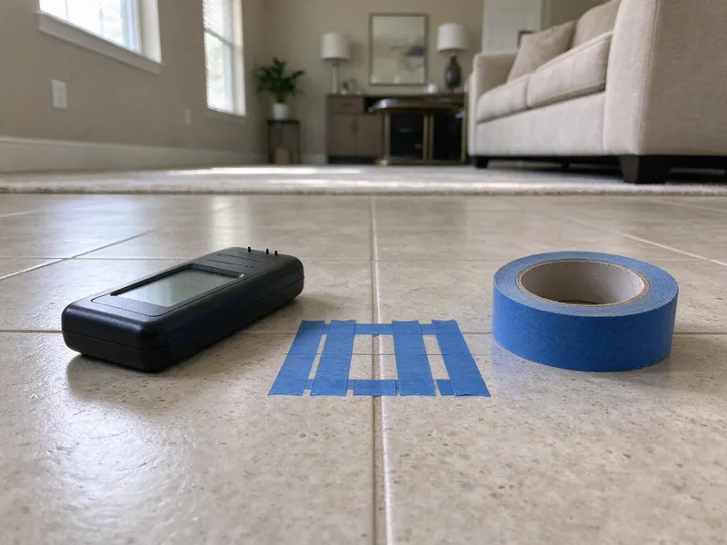

Hydrojet Plumbing in Temple, TX
DFJ Plumbing provides expert hydrojet plumbing services throughout Temple, TX to tackle even the most challenging drain obstructions. Restore your plumbing's performance.
- Fast, Powerful Cleaning
- Eco-Friendly Methods
- Long-Lasting Results
- Certified Technicians

Get Your Drains Clear with Hydrojet Plumbing in Temple, TX.
Don't let serious clogs disrupt your home, contact DFJ Plumbing for a professional solution.
Professional Hydrojet Plumbing Services in Temple, TX
DFJ Plumbing specializes in hydrojet plumbing, a powerful and precise method for clearing the toughest drain and sewer line blockages. Using high-pressure water streams, we effectively remove grease, mineral buildup, tree roots, and other debris that common snaking tools can't touch, ensuring a thorough clean for your Temple property.
Our expertise includes:
- Remove stubborn grease and sludge buildup.
- Clear invasive tree roots from sewer lines.
- Restore full diameter to pipes clogged by scale.

Additional Plumbing Maintenance Services in Temple, TX
Our maintenance and specialty plumbing services in Temple, TX catch small problems before they become emergencies.


Customers
Why Choose DFJ Plumbing for Hydrojet Plumbing in Temple, TX?
We understand the unique challenges of Texas plumbing, from hard water scale to expansive clay soils, making hydrojetting an essential service for many homeowners.
- Deep Clean, Hydrojetting cleans the entire pipe wall, removing all debris and buildup, unlike snaking which only punches a hole.
- Prevents Recurrence, By eliminating the source of the clog, hydrojetting significantly reduces the likelihood of immediate future blockages.
- Safe for Pipes, When performed by a professional, hydrojetting is safe for most modern plumbing systems and materials.
Citywide Coverage
DFJ Plumbing is dedicated to serving every neighborhood within Temple and its surrounding areas. We ensure that no matter where you are located, our expert hydrojet plumbing services are just a phone call away.
Experienced Team
The DFJ Plumbing team undergoes continuous training on the latest hydrojet plumbing techniques and safety protocols. We bring this advanced knowledge to every job, delivering precise and reliable service for your Temple home.
Safety-First Approach
We ensure all hydrojet plumbing services are performed with the utmost care for both your plumbing system and the environment. Our methods are designed to be effective while minimizing any potential risks or disruptions to your Temple property.
Trusted Certified Temple Plumbing Services Professionals
At DFJ Plumbing, we take pride in providing licensed, certified plumbing services throughout Temple, TX. Backed by leading industry credentials, our experienced plumbers combine technical skill with genuine customer care. Whether it is repair, installation, or maintenance, we follow strict safety and quality standards to deliver lasting results you can trust.
Call Us Now PHCC Plumbing Contractor Recognition
PHCC Plumbing Contractor Recognition Better Business Bureau (BBB) Accreditation
Better Business Bureau (BBB) Accreditation Angi Certified Pro
Angi Certified Pro ISO 9001 Quality Management Certification
ISO 9001 Quality Management CertificationReliable Hydrojet Plumbing Services in Temple, TX
Residential Hydrojetting in Temple
DFJ Plumbing offers tailored hydrojet plumbing services for homes in Temple. We tackle common residential issues like kitchen drain grease buildup, bathroom hair clogs, and laundry line lint accumulation. Our powerful equipment is designed to clear these blockages thoroughly, restoring your home's plumbing to optimal function. We ensure the process is minimally invasive and highly effective for your specific pipe configurations, considering the typical age and material of homes in the area.

Commercial Hydrojet Plumbing in Temple, TX
Businesses in Temple, TX often face unique challenges with their plumbing systems due to higher usage and specific waste types. Our commercial hydrojet plumbing service is equipped to handle large-scale blockages common in restaurants, retail spaces, and industrial facilities. We effectively remove FOG (fats, oils, and grease) buildup, food debris, and other commercial waste, preventing costly downtime and ensuring your business operates smoothly. We can often schedule these services during off-peak hours to minimize disruption.
Tree Root Removal with Hydrojetting in Temple
Tree roots are a common problem for sewer lines in Temple, particularly with older homes and mature landscaping. Roots seek out moisture and can infiltrate even tiny cracks, growing into dense masses that cause severe blockages and damage. Our hydrojet plumbing service uses specialized root-cutting nozzles to slice through these tenacious intrusions and wash them away, leaving your sewer line clear and preventing recurring issues. This method is often more effective than traditional augers for complete root removal.
Hard Water Scale Removal in Temple, TX
Texas is known for its hard water, which can lead to significant mineral scale buildup inside pipes over time, reducing water flow and creating rough surfaces where other debris can snag. Our hydrojet plumbing service is highly effective at blasting away this stubborn calcium and magnesium scale. By restoring the inner diameter of your pipes, we improve water pressure and prevent future clogs caused by mineral accumulation. This is particularly important for homes with aging galvanized or cast iron pipes in Temple.
Preventative Hydrojet Maintenance in Temple
For properties with chronic drain issues or businesses that rely heavily on their plumbing, preventative hydrojet plumbing maintenance in Temple can save significant money and hassle. Regular hydrojetting clears out slow-forming blockages before they become critical, extending the life of your plumbing system and preventing emergency repairs. We can set up a custom maintenance schedule based on your property's specific needs and usage patterns, ensuring consistent performance.
Emergency Hydrojet Services in Temple, TX
When you have a complete sewer line backup or a severely clogged main drain in Temple, TX, you need fast, effective help. DFJ Plumbing offers emergency hydrojet plumbing services to address urgent blockages quickly. Our technicians are on standby to deploy high-pressure water jetting to clear the obstruction, restore flow, and prevent further damage or health hazards. Don't wait, call us immediately for rapid response to your plumbing crisis.
Sewer Camera Inspection Before Hydrojetting in Temple
Before performing any hydrojet plumbing in Temple, DFJ Plumbing typically conducts a thorough sewer camera inspection. This allows us to accurately diagnose the type, location, and severity of the blockage, as well as assess the condition of your pipes. Knowing if there are existing pipe damages like cracks or collapses helps us determine the appropriate pressure and nozzle, ensuring the hydrojetting process is safe and effective, and avoiding potential issues with older Texas foundation types.

Eco-Friendly Drain Solutions in Temple, TX
Hydrojet plumbing is an environmentally friendly method for drain cleaning in Temple, TX because it relies solely on high-pressure water, without the need for harsh chemicals. This approach protects your pipes from corrosive substances and prevents harmful pollutants from entering the municipal wastewater system or local waterways. DFJ Plumbing is committed to offering sustainable plumbing solutions that are effective and safe for your home and the Texas environment.
Expert Hydrojet Plumbing Near Me in Temple, TX
If you're searching for reliable hydrojet plumbing near me in Temple, look no further than DFJ Plumbing. Our local team is equipped with advanced hydrojetting technology to tackle even the most stubborn drain and sewer line blockages. We are committed to providing prompt, professional service to every homeowner and business in the area.
DFJ Plumbing is your trusted local expert for hydrojet plumbing throughout Temple, TX. We understand the specific plumbing challenges faced by properties in our community, from hard water to expansive clay soil shifts affecting sewer lines. Call us for effective, long-lasting drain cleaning solutions.
DFJ Plumbing at a Glance
- Fully licensed plumbing team covering Temple, TX
- Same-day appointments and 24/7 emergency response
- Clear written estimates, no hidden fees
- 4.9-star rated by 812+ Texas customers
Temple Map
Temple Information
- Population
- 93,095
- Area codes
- 254/979/361
- Service area
- Temple and communities within 40 miles
- Nearby
- Killeen, Waco, Georgetown, Round Rock
Hydrojet plumbing is especially crucial for homes in Temple, TX due to the region's hard water, which causes mineral buildup, and expansive clay soils that can lead to tree root intrusion and sewer line shifts.
Expert Services
Trust our professionals for reliable DFJ Plumbing solutions in Temple, TX.
Our Specialized Plumbing Services in Temple, TX
At DFJ Plumbing, we provide a complete range of plumbing services across Temple, TX. From leak detection to full system installations, our team ensures fast, precise, and affordable service for both residential and commercial properties. Explore our core services below:


How Our Hydrojet Plumbing Process Works in Temple, TX
Our hydrojet plumbing process is designed for maximum efficiency and effectiveness, ensuring a thorough clean for your pipes.
Request a Quote
Contact DFJ Plumbing at (737) 405-5978 to schedule an assessment for your clogged drains. We'll discuss your symptoms and set up a convenient time for a technician to visit your Temple property.
Diagnosis & Plan
Our technician will arrive, often performing a sewer camera inspection to pinpoint the clog's exact location and nature. Based on this, we'll recommend the best hydrojetting approach and provide a clear quote.
Hydrojet Cleaning
Using specialized nozzles and high-pressure water, we'll blast away blockages and thoroughly clean the inside of your pipes. This powerful process ensures all debris, grease, and roots are removed effectively.
Frequently Asked Questions About Hydrojet Plumbing in Temple
The cost of hydrojet plumbing in Temple, TX can range from $300 to $800 or more, depending on the severity and location of the clog, as well as the length and diameter of the pipe. Factors like accessibility, the presence of tree roots, and whether a prior camera inspection is needed will also influence the final price. We provide transparent, upfront quotes after an assessment.
While hydrojetting provides a thorough clean, some underlying issues like severely damaged or collapsed pipes might cause clogs to return. If a clog re-appears shortly after our hydrojet service, we will investigate further, often with another camera inspection, to identify any structural problems that might require repair or replacement, and discuss warranty options.
DFJ Plumbing utilizes industry-leading hydrojetting equipment from reputable manufacturers known for their power and reliability, such as Spartan Tool and MyTana. These professional-grade machines ensure we can deliver the highest quality and most effective drain cleaning services for our clients in Temple.
Yes, hydrojet plumbing is highly effective at clearing tree roots from sewer lines. We use specialized nozzles designed to cut through even dense root masses. The high-pressure water then flushes the severed roots and other debris out of the pipe, restoring full flow. This is a common and effective solution for many Temple homes.
Snaking involves using an auger to punch a hole through a clog, often leaving behind some debris. Hydrojetting, on the other hand, uses high-pressure water to thoroughly scour the entire inner surface of the pipe, removing all buildup and leaving it completely clean. Hydrojetting provides a much more comprehensive and longer-lasting solution.
For most homes in Temple, hydrojetting every 1-3 years can be beneficial as preventative maintenance, especially if you have an older home, many mature trees, or frequently experience slow drains. Businesses with high-volume plumbing, like restaurants, may benefit from quarterly or semi-annual hydrojetting to prevent grease buildup.
The duration of hydrojet plumbing depends on the complexity of the clog and the length of the pipe being cleaned. Most residential hydrojetting jobs in Temple can be completed within 1 to 3 hours, but more severe or extensive blockages, especially those involving main sewer lines or heavy root intrusion, may take longer.
When performed by a trained professional, hydrojetting is generally safe for most types of pipes, including older cast iron or PVC. However, severely damaged, corroded, or fragile pipes might not withstand the high pressure. This is why DFJ Plumbing always recommends a pre-service camera inspection to assess pipe integrity before proceeding with hydrojet plumbing.
What People Are Saying About Our Plumbing Experts?

James P.
Our commercial plumbing system had a leak under the sink, and DFJ Plumbing handled it professionally. The plumbers arrived quickly and restored everything without disruption to our customers.
Commercial Plumbing · Pflugerville, TX
Patricia H.
We had a slab leak that two other companies could not find. DFJ Plumbing located it in under an hour, explained our options, and the price matched the quote to the dollar.
Slab Leak Repair · Georgetown, TX
Sofia M.
Two new toilets installed in one visit, no mess left behind, and the tech even adjusted a faucet he noticed was dripping. Fair pricing and really friendly.
Toilet Installation · Waco, TX
Emily R.
I called DFJ Plumbing for plumbing repair, and the technician was fast, polite, and thorough. They explained the problem clearly and fixed it the same day. I will definitely hire them again. Highly recommended!
Plumbing Repair · Leander, TXLaura S.
I scheduled a water heater replacement, and the team made the process smooth and affordable. The new unit works perfectly, and they cleaned up after completing the job.
Water Heater Replacement · Georgetown, TX
Mark T.
When our office needed drain cleaning, DFJ Plumbing provided quick, reliable service. The plumber arrived on time and made sure every drain flowed perfectly before leaving. Very satisfied.
Drain Cleaning · Killeen, TX